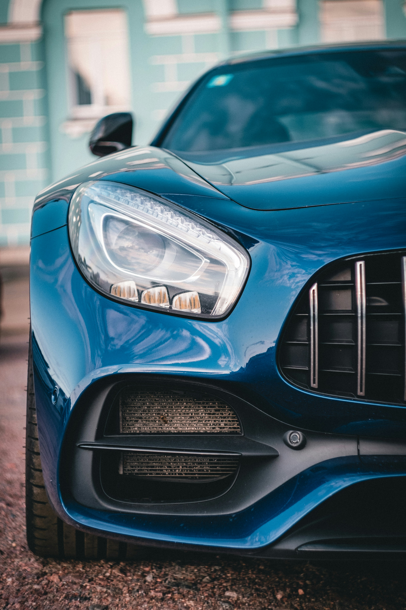

Valorile noastre
La Autoservice Pro, reparăm doar ceea ce este necesar. Ne ghidăm după transparență totală, oferind soluții optime pentru siguranța ta.
Porneste la maximum
De la reglaje de precizie până la întreținere de rutină, eliberăm adevăratul potențial al vehiculului tău. Reparații rapide, prețuri transparente și performanță garantată.

Despre noi
La Autoservice Pro, reparăm doar ceea ce este necesar. Ne ghidăm după transparență totală, oferind soluții optime pentru siguranța ta.
Am început cu o echipă pasionată de mecanică auto, iar astăzi oferim dotări de ultimă generație pentru performanța vehiculului tău.
CONFIGURAȚIA CILINDRILOR
Optimizare completă pentru motoarele de înaltă performanță, asigurând un consum redus și fiabilitate maximă.
EFICIENȚĂ COMBUSTIBIL
Sisteme avansate de diagnoză care ajută la reducerea emisiilor și eficientizarea consumului de carburant.
TURAȚIE MAXIMĂ
Calibrare și tuning profesional realizat de experți pentru a atinge potențialul maxim al mașinii tale.
De ce sa ne alegi
La Autoservice Pro punem accent pe precizie. Fiecare intervenție este realizată cu echipamente moderne.

Rezultatele noastre
Ne mândrim cu standardele înalte de calitate și profesionalism pe care le oferim fiecărui client. Experiența noastră și miile de mașini reparate cu succes sunt cea mai bună dovadă a încrederii voastre.
Ani de experiență
Clienți mulțumiți zilnic
Mașini reparate
Specialiști certificați